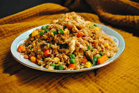

Fried-Rice

Description:
Fried rice is a dish of cooked rice that has been stir-fried in a wok or a frying pan and is usually mixed with other ingredients such as eggs, vegetables, seafood, or meat.
Ingredients:
- Rice
- Vegetables
- Aromatics
- Eggs
- Sauces
- Seasonings
Steps:
- Prepare the rice
- Stir-fry vegetables and aromatics
- Add other vegetables
- Scramble the eggs
- Add the rice
- Season and combine
- Garnish and serve
Home